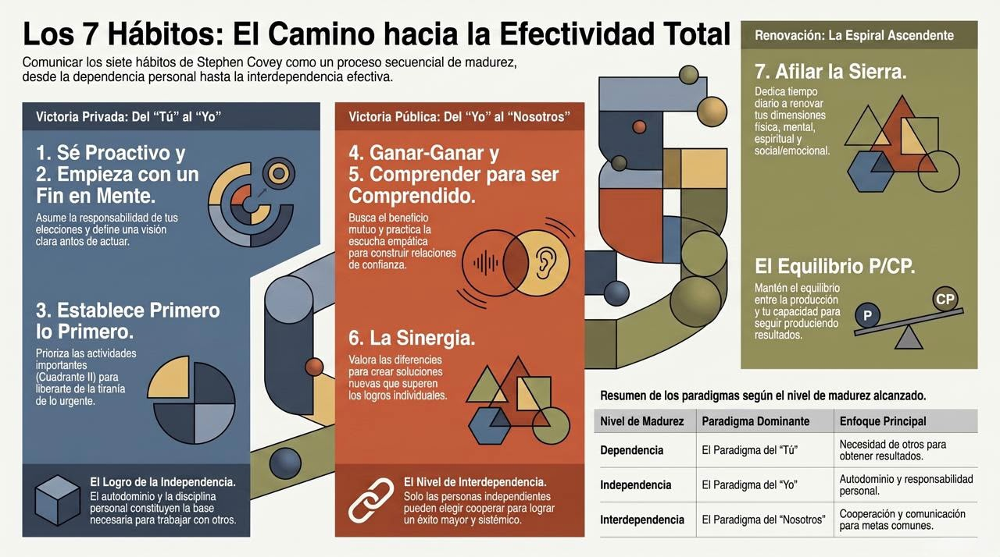

Los 7 hábitos de Stephen Covey no solamente hablan de ser una persona organizada, sino de cambiar la manera en la que pensamos y actuamos todos los días. Los hábitos están acomodados como un proceso donde primero aprendemos a controlar nuestras propias acciones y después a trabajar mejor con los demás.
Los primeros tres hábitos se enfocan en el crecimiento personal. Ser proactivo significa asumir la responsabilidad de nuestras decisiones en lugar de buscar excusas. Tener un fin en mente ayuda a definir metas claras y saber hacia dónde queremos llegar. Finalmente, poner primero lo primero consiste en organizar nuestro tiempo y darle prioridad a las actividades realmente importantes.
Los hábitos del cuatro al seis hablan sobre la convivencia con otras personas. La idea de ganar-ganar busca que todos obtengan un beneficio, comprender antes de ser comprendido nos enseña a escuchar antes de responder, y la sinergia demuestra que cuando se trabaja en equipo se pueden conseguir mejores resultados que trabajando de forma individual.
El séptimo hábito consiste en renovar constantemente nuestras capacidades. Esto significa dedicar tiempo a cuidar nuestra salud física, mental y emocional para poder seguir mejorando tanto en la escuela como en la vida personal.